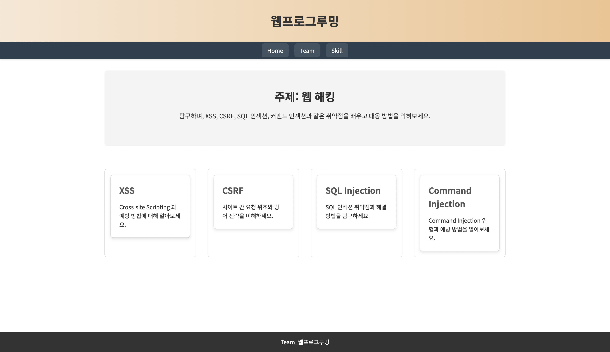
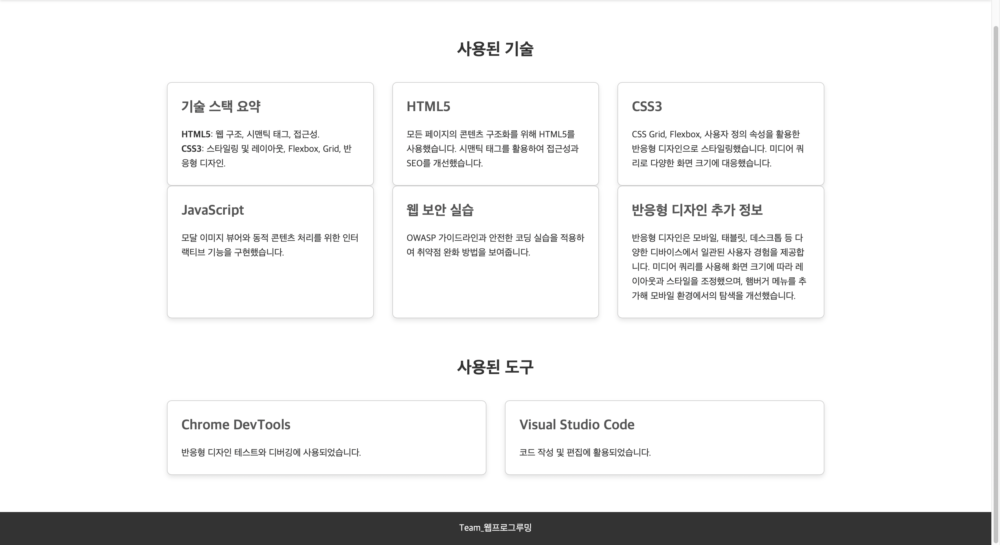
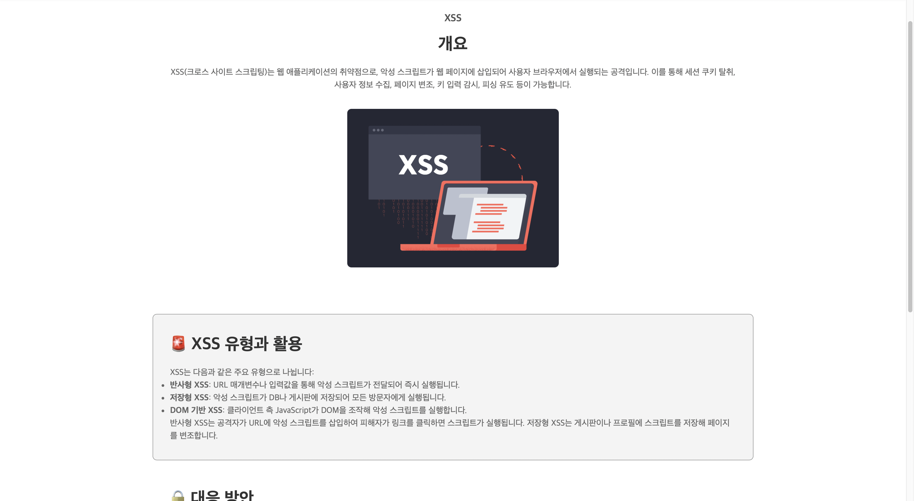

주제: 웹 해킹
웹 해킹은 웹 애플리케이션 또는 서버에서 발생하는 보안 취약점을 악용하여
시스템에 불법적으로 접근하거나 데이터 유출 및 파괴를 목적으로 하는
행위입니다. 웹 해킹의 주요 목표로는 개인 정보, 금융 정보, 기업의 중요한
데이터를 빼내는 것등이 있으며 이를 통해 불법적인 이익을 취하거나
시스템에 장애를 일으킬 수 있습니다. 웹 해킹의 대표적인 공격으로는 XSS,
CSRF, SQL Injection, Command Injection 등이 있습니다. 현대 사회에서
대부분의 정보와 서비스가 웹 기반으로 운영되고 있기 때문에 웹 해킹에 대해
조금이라도 알아두면 좋을 것 같다고 생각합니다.

중간과제 home 페이지
XSS, SQL, CSRF,Command Injection과 같은 웹 해킹 공격들을 study
페이지로 옮기고 웹 해킹이라는 주제에 대해 더 자세히 작성했습니다.

중간과제 skill 페이지
사용한 Skill이나 도구들을 글 대신 사진을 사용해서 보는 사람들이 쉽게
이해할 수 있도록 하였습니다.

중간과제 xss 페이지
키워드 검색 기능을 추가하여 원하는 내용을 쉽고 빠르게 찾을 수 있게
하였고 JavaScript를 사용해서 실시간으로 배너가 변하는 기능도
추가했습니다.또한 각 주제마다 공격 예시와 취약점 원인, 시나리오등의
내용들도 추가하였습니다.마지막으로 기본 화면에는 공격의 종류와 간단한
설명을, 화살표 버튼을 누르면 세부적인 내용들이 나오게 하여 가독성을
높였습니다.